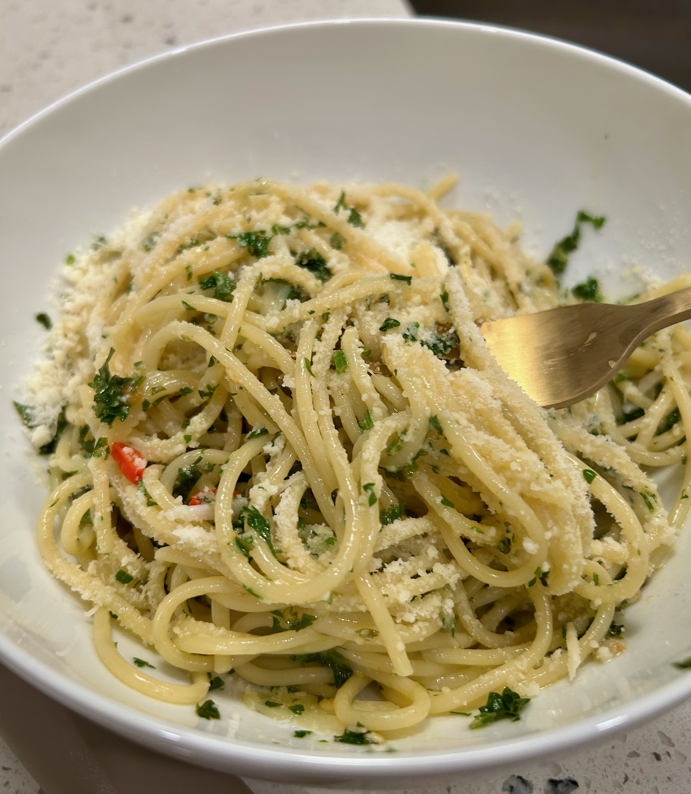

Kevin's Spaghetti Aglio e Olio
A simple 5-ingredient pasta dish.
Disclaimer: this is not a traditional recipe for Aglio e Olio.
Ingredients
- A handful of spaghetti (~150 g)
- Water, four cups
- Salt
- 2/3 cup high quality extra-virgin olive oil
- 3-4 garlic cloves, thinly sliced
- 1 tsp crushed red pepper flakes, to taste
- 1/4 cup flat-leaf parsley, finely chopped
- Pasta water (important for forming the sauce)
- Parmigiano-Reggiano, ideally hand-grated
- Lemon juice (optional)
Instructions
- Bring a large pot of salted water to a boil.
- Add the spaghetti and cook until just shy of al dente (~9 minutes).
- While the pasta cooks, chop the parsley fine and slice the garlic thin.
- Warm the olive oil in a wide skillet over medium-low heat. Add the garlic and chili flakes and cook gently, swirling the pan often, until the garlic turns pale gold, 4-5 minutes.
- Do not burn the garlic, or even brown it.
- Turn down the heat and add a splash of starchy pasta water. Mix with the oil until it forms a nice emulsion.
- When the pasta is just shy of al dente, add it to the pan with the sauce, along with the parsley.
- Add splashes of pasta water and mix until you get your desired consistency. A squeeze of lemon goes here, if you like.
- Plate right away and sprinkle on Parmigiano-Reggiano if you like. Enjoy!